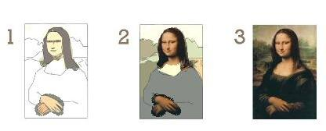
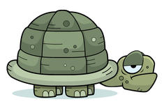
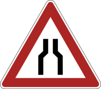
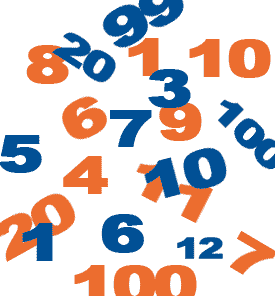
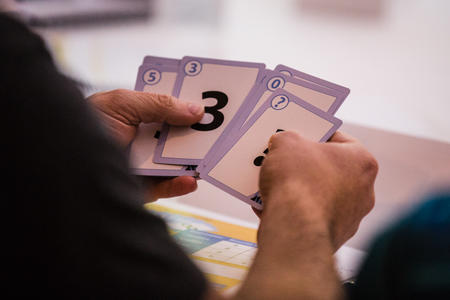
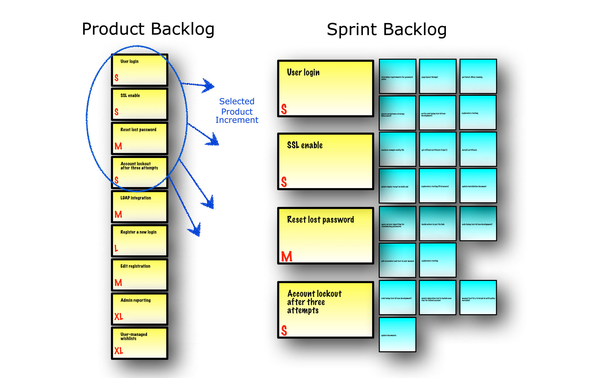
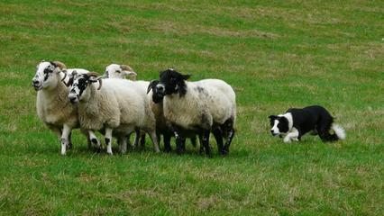

Retour d'experience d'une équipe Agile
Sylvain Chabert
Contexte
L'entreprise
- Editeur logiciel
- Sécurité informatique (Réseau)
L'agilité
- R&D en mode agile (Scrum) depuis + de 5 ans
- Rodé sur les différentes cérémonies (Lancement de sprint, Standup, Démo, Rétro)
- Souci de la qualité: Revue de code, Tests auto, Intégration continue
Le projet
- Projet stratégique reprenant de zéro l'existant
- Interaction de 4 briques avec différents rôles/techno/language
- Equipe de 8/12/15 personnes
Disclaimer
- Nos solutions à nos problèmes
- Résultats discutables et perfectibles
- Permettre le partage et l'échange
Problèmes rencontrés et solutions apportées
Problème: Le rôle du PO
|
PO absent ou non disponible |
PO ne connaissant pas les besoins client |
D'autres personnes (managers, marketing, commerciaux, etc...) fixent les priorités |
Solution: Le PO à 2 têtes
- Le Product Leader: tourné vers l'équipe et présent au quotidien
- Le Product Manager: tourné vers l'exterieur et proche des besoins utilisateur
- Eux seul sont décisionnaires sur le backlog et sa priorisation
Problème: Equipe trop grosse
- Passage de 8 à 12 personnes, puis à 15 personnes
- Toutes les cérémonies sont lourdes (Lancement sprint, Stand up, Rétro)
- Difficulté à suivre/partager l'information
Solution: Scinder en plusieurs équipes
- Couper par thème fonctionnel ou technique
- Composer les équipes en fonction du thème
- Moins de dépendance/gêne entre les équipes
Problème: Gestion d'un nouvel arrivant
- Temps d'adaptation (humain, technique)
- Quand sera-t-il/elle efficace ?
Solution: Projet d'intégration
- Un projet portant sur un sujet périphérique (outil, framework, étude)
- Incite à découvrir l'équipe et l'environnement de travail
- Incite à rencontrer d'autres personnes de l'entreprise
- Permet au nouvel arrivant de montrer un travail réalisé
Problème: Montée en compétences / Partage de connaissances
- Manque de temps
- Trop peu de gens connaissent un domaine / techno / composant
Solution: Pair-Programming & Pair-Testing
- Permet de découvrir et partager de l'information par l'exemple
- L'échange améliore la qualité du travail fourni
- Gros retour sur investissement
Problème: Développement mal ciblé
- Inutilisé ou incompris par les utilisateurs
- Travail couteux avec un faible retour sur investissement
- Implémentation trop compliquée par rapport au besoin
Solution: Développement minimaliste incrémental
- Découper en plusieurs US d'amélioration successive
- Première(s) itération(s) simpl(ist)es
- Retours rapides à plusieurs niveaux: dev, QA, PO & stakeholders, utilisateurs (Test UX)
- Plus facile de jeter une fausse piste que la garder à tout prix (dette technique)
Conclusion
- Favoriser l'amélioration continue grâce à la rétrospective
- Avoir du feedback rapide via des cycles courts
Questions / Échanges
Et aussi...
Problème: Appréhender un sujet flou/large/complexe
- Difficulté pour le cadrer (où commencer ? où s'arrêter ?)
- Définition du Quoi (quelles sont les attentes ?)
- Difficile de prévoir ou donner de la visibilité dessus
Solution: Equipe POC/Exploration
- Monter une petite équipe dédiée au sujet
- Réalise les études nécessaires
- Réalise des POCs
- Echange avec le PO mais aussi d'autres interlocuteurs
Problème: Revue de code qui traîne
- Revue de code ouverte depuis plusieurs jours
- Nombreux aller-retour entre le soumetteur et les reviewers
- Revue de code chargée et potentiellement illisible
Solution 1: Pair-Review

- permet de dégrossir le travail de revue
- prise en compte rapide et argumentée des remarques
Solution 2: Limite du nombre de revues ouvertes
- Hérité du Kanban
- Incite à effectuer les revues
- Incite à aider les soumetteurs de revue qui bloquent
Problème: Confusion entre les SP et les JH
- Estimation des SP et des JH lors du Sprint Planning
- Peu d'interêt perçu des SP par rapport aux JH
Solution: Ne pas estimer les deux au même moment
|
Poker planning (hebdomadaire): donne une idée au PO du coût d'une US et l'aide à prioriser son backlog  |
Découpage (et estimation) des tâches en début de sprint  |
Problème: Goulet d'étranglement sur la validation
- 2 QA pour 9 dev
- Validation d'US "finie" qui traine
- Pression sur les QA en fin de sprint
Solution 1: Tests exploratoires
- Se font avant une soumission de revue de code
- Le QA teste le développement sur le poste du développeur
- Prise en compte rapide des remarques (voir à la volée)
- 5 à 20 min
Solution 2: Bug Story
- Regrouper plusieurs bugs en 1 seule US et un seul build
- Mise en commun du temps de mis en place de l'environnement de validation